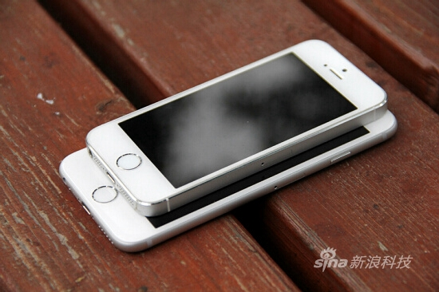
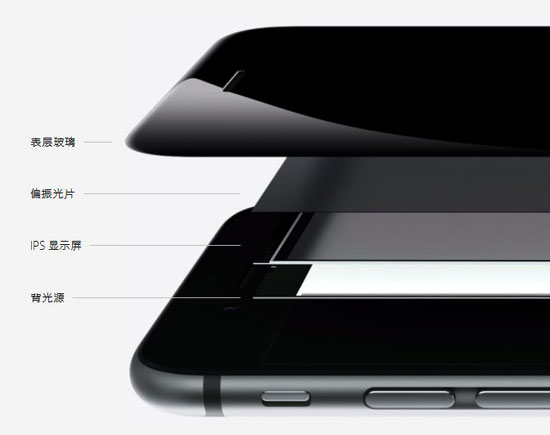
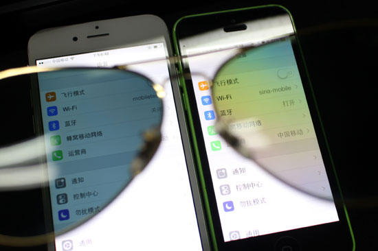
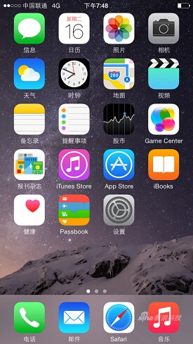
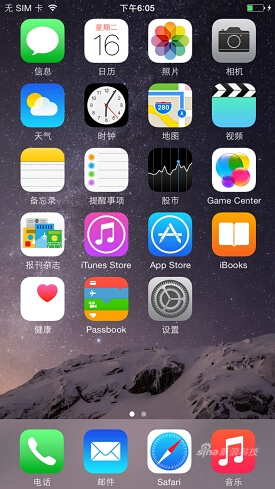
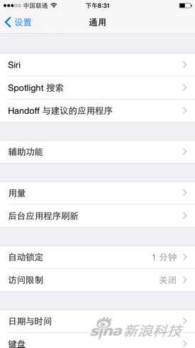

Desde el iPhone 3G, Apple ha mantenido básicamente el ritmo de una gran renovación cada dos años, así que en septiembre de este año vimos el iPhone 6 y el iPhone 6 Plus, con pantalla más grande y un diseño exterior completamente nuevo. En cuanto al interior, Apple ha incorporado en este teléfono el nuevo procesador A8, el coprocesador M8 y la función NFC, añadida para el pago móvil con Apple Pay.

Se puede decir que, en comparación con el cambio del iPhone 5 al 5s, esta vez el iPhone 6 supone una gran actualización. Por la retransmisión en directo de Sina Mobile la noche del evento, también se podía apreciar claramente la gran atención que el público prestaba al iPhone 6.
Antes del lanzamiento oficial, la versión comercial del iPhone 6 de 4,7 pulgadas ya había llegado a Sina Mobile. Te contamos su experiencia de uso real.
Un cuerpo «esbelto y firme»:
En comparación con todas las generaciones anteriores de iPhone, el iPhone 6 por fin se ha vuelto más ancho, y también más largo que el 5 y el 5s, por lo que la pantalla ha crecido hasta las 4,7 pulgadas. Dado que los teléfonos Android actuales se concentran en 5 pulgadas o más, tras encuestar a 30 colegas, la gran mayoría, después de ver el dispositivo real, consideró que el tamaño del cuerpo del iPhone 6 de 4,7 pulgadas es aceptable y no les parece grande.

Nada más recibir el iPhone 6, casi todos dijeron las mismas palabras: «es demasiado ligero, demasiado delgado». Este teléfono de 6,9 mm de grosor resulta realmente sorprendente, y mantiene un peso de 129 gramos; su cuerpo se puede describir como «esbelto». Una vez que te acostumbras a su delgadez, la sensación al tacto es bastante cómoda.


La integración del cuerpo del iPhone 6 es muy buena: el vidrio pulido y curvado que recubre la pantalla hace que el iPhone 6 sea suave y redondeado, y la unión entre la pantalla y el marco metálico curvo también es muy natural, lo que contribuye en gran medida a mejorar la sensación al tacto. Conseguir semejante belleza y textura integradas con vidrio y metal quizás solo Apple pueda lograrlo. Además, gracias a este diseño de pantalla, cuando se enciende, el contenido mostrado tiene una delicada sensación de «flotar» sobre la superficie del dispositivo.

Como el cuerpo es más largo, los botones de volumen laterales se han alargado para facilitar su uso, y el botón de encendido se ha movido al lado derecho del dispositivo; al principio puede que cueste adaptarse. En la unidad que tenemos, la sensación de los botones de volumen, el de encendido y el botón de inicio es algo dura. Al mismo tiempo, pensando en la operación con una sola mano, se ha añadido la función «Acceso facilitado»: al tocar dos veces la zona de Touch ID, la pantalla se desplaza hacia abajo para pasar al modo de una sola mano.

Toda la parte trasera del dispositivo utiliza metal anodizado, solo que las bandas superior e inferior que cubren las antenas son algo anchas. En la unidad blanca que tenemos, las bandas grises de la parte trasera ya resultan algo llamativas. Según la experiencia con los tres modelos en el evento del día del lanzamiento, el dorado es aún más llamativo, mientras que el gris espacial es relativamente el más natural. Dicho esto, creo que el dorado será la elección de la mayoría de los usuarios en China.


Esta zona de bandas, junto con la cámara sobresaliente, se ha convertido en los dos puntos más criticados del iPhone 6, y son también las concesiones que Apple ha hecho por la señal del teléfono y el efecto fotográfico.
Mejoras en los detalles de la pantalla:
En el evento del 10 de septiembre, el CEO de Apple, Tim Cook, anunció al inicio el lanzamiento de los dos iPhone, casi idénticos en apariencia y especificaciones a los que se habían filtrado anteriormente. Quizás lo único inesperado fue que los dos iPhone llegaron al mismo tiempo: uno con pantalla de 4,7 pulgadas y otro de 5,5 pulgadas. El que ha llegado hoy a Sina Mobile es la versión de 4,7 pulgadas; la pantalla es más grande que la de la generación anterior (iPhone 5s, con pantalla de 4 pulgadas y 1136x640 píxeles), y la resolución también ha mejorado, aunque en cuanto a densidad de píxeles, los 326 PPI de la pantalla de 4,7 pulgadas con 1334x750 píxeles son los mismos que los del 5s.
El eslogan del iPhone 6 en el sitio web oficial de Apple es «Más grande que grande»; lo que Apple quiere transmitir es que esta generación de iPhone ha mejorado en todos los aspectos, y el punto más evidente, y el que más fácilmente llama la atención, es el aumento del área de la pantalla.
En los últimos dos años, los fabricantes de Android han estado trabajando intensamente en el hardware. Después del iPhone 4, Apple ya no tiene ventaja en los parámetros de tamaño de pantalla y resolución (densidad de píxeles) de sus teléfonos, pero los 326 PPI ya han alcanzado el umbral del ojo humano. Sin usar una lupa, la diferencia de nitidez entre los 326 PPI del iPhone 6 de 4,7 pulgadas y los 441 PPI de una pantalla 1080P no es tan evidente.

El PPI influye en la nitidez, pero esta ya ha superado la capacidad de discriminación del ojo humano. Otros factores tienen una influencia más evidente en la percepción de la pantalla, por lo que la pantalla del iPhone 6 utiliza otras vías para mejorar la experiencia sensorial.
La pantalla del iPhone 6 y del iPhone 6 Plus es descrita por Apple como «una nueva pantalla Retina HD de alta definición, de mayor tamaño y mayor resolución», y sus ventajas concretas se pueden resumir en: mayor contraste, ángulos de visión más amplios, colores más reales y la incorporación de una película polarizadora.
Mayor contraste: Apple utiliza una tecnología de orientación de la luz que emplea luz ultravioleta para controlar la posición de los cristales líquidos de la pantalla, consiguiendo que se alineen con mayor precisión en el lugar adecuado. De este modo, los negros se ven más profundos y los textos más nítidos y definidos, mejorando así la experiencia visual.
Ángulos de visión más amplios: en el evento, al presentar la pantalla del iPhone 6, Apple mencionó los «píxeles de doble dominio», pero no dio demasiadas explicaciones. Esta tecnología no es la primera vez que se utiliza: LG ya la mencionó cuando presentó su tecnología de pantalla AH-IPS en 2011, y tanto el HTC One X de 2012 como la primera generación del HTC One de 2013 utilizaron esta tecnología en sus pantallas. La diferencia con los píxeles LCD convencionales es que, en los píxeles de doble dominio, los electrodos de los píxeles no están completamente alineados, sino dispuestos de forma retorcida; los subpíxeles «inclinados» pueden rendir mejor en condiciones de iluminación no uniformes, logrando así un mejor ángulo de visión.

Colores más reales: últimamente, a los fabricantes de teléfonos les gusta hablar de la cobertura de la «gama de colores (Color Gamut)» para valorar la calidad de las pantallas. El iPhone 6 cubre todo el estándar de color sRGB, pero en realidad muchos teléfonos alcanzan este estándar; el Samsung S5, cuya pantalla utiliza material Super AMOLED, en modo profesional puede alcanzar incluso el 137 %, por lo que este parámetro ya no tiene mucha importancia.
Así que mejor hablemos de la experiencia real: al comparar el iPhone 6 con el iPhone 5s, la diferencia de color es mínima; de hecho, al fotografiar las pantallas, si no te acercas mucho, apenas se distingue la diferencia.

Película polarizadora: como dice el sitio web oficial de Apple, «siempre hay momentos en los que necesitas usarlo bajo el sol». Si tienes un iPhone 5s, al ponerte las gafas de sol verás que el brillo de la pantalla se reduce drásticamente, lo que afecta a la percepción visual. Por eso, Apple ha añadido una película polarizadora (recubrimiento) entre la pantalla LCD y el vidrio superficial. En términos sencillos, su función es similar a una persiana: puede bloquear y dejar pasar la luz, permitiendo que la pantalla se vea con claridad incluso con gafas de sol.

En cuanto a la experiencia de uso concreta: cuando el iPhone 6 y el 5s están al máximo brillo, en la misma interfaz, al mirar con gafas de sol el iPhone 6 parece algo más nítido que el 5s o el 5c; con gafas de sol polarizadas, al mirar el 5s se ve una capa de destellos de colores como burbujas de jabón, pero en el iPhone 6 no aparece.

Este es el efecto que produce esta película polarizadora, una optimización que Apple introdujo pensando en mejorar la percepción de la pantalla en el escenario específico de llevar gafas de sol. En comparación con los puntos anteriores, el efecto de la película polarizadora es bastante más evidente.
Además del panel LCD en sí, Apple también ha mejorado la capa exterior de la pantalla: por primera vez en un iPhone, incorpora vidrio curvo 2.5D, un diseño que ya se había utilizado en el Nokia N9. La interacción de la interfaz del iPhone 6 no incluye gestos de «deslizar el dedo desde fuera de la pantalla hacia dentro», pero el vidrio curvo es sin duda más cómodo al tacto que el vidrio de ángulos rectos anterior. Por lo tanto, la función del vidrio curvo se refleja más en mejorar la sensación al tacto que en el plano funcional, pero ciertamente ha aportado una mejora en la experiencia de usuario de este teléfono.
Hardware y rendimiento:
El iPhone 6 utiliza un procesador central A8 de 64 bits y doble núcleo a 1,4 GHz, fabricado con un proceso de 20 nanómetros, junto con el coprocesador M8. Esta vez, el rendimiento que se muestra en el sitio web oficial de Apple todavía se compara con el del iPhone original, lo que demuestra que la mejora de rendimiento respecto al 5s no es revolucionaria.

Usando GeekBench se puede comprobar que su RAM sigue siendo de 1 GB; las puntuaciones obtenidas son de 1630 en un solo núcleo y 2921 en múltiples núcleos. En comparación con los datos del procesador A7 del iPhone 5s, 1383 en un solo núcleo y 2541 en múltiples núcleos, la mejora es del 17,86 % en un solo núcleo y del 14,95 % en múltiples núcleos.
 Pero detrás de estos datos, el procesador A8 incorpora un nuevo codificador de vídeo y un procesador de señal de imagen que pueden brindar soporte a las funciones de la cámara y el vídeo. Al mismo tiempo, el nuevo motor Metal de Apple puede aprovechar al máximo el rendimiento gráfico del A8 y de iOS 8; estoy convencido de que, a medida que aumenten los juegos compatibles con Metal, las ventajas de rendimiento del iPhone 6 se harán más evidentes.
Pero detrás de estos datos, el procesador A8 incorpora un nuevo codificador de vídeo y un procesador de señal de imagen que pueden brindar soporte a las funciones de la cámara y el vídeo. Al mismo tiempo, el nuevo motor Metal de Apple puede aprovechar al máximo el rendimiento gráfico del A8 y de iOS 8; estoy convencido de que, a medida que aumenten los juegos compatibles con Metal, las ventajas de rendimiento del iPhone 6 se harán más evidentes.
Estándares de red:
El modelo que hemos probado en esta ocasión es el iPhone 6 A1586 de la versión minorista de un determinado país. Según la lista de estándares de red compatibles que aparece en el sitio web oficial de Apple, se puede considerar «compatible con todas las redes»:
CDMA EV-DO Rev. A (800, 1700/2100, 1900, 2100 MHz)
UMTS (WCDMA)/HSPA+/DC-HSDPA (850, 900, 1700/2100, 1900, 2100 MHz)
TD-SCDMA 1900 (F)， 2000 (A)
GSM/EDGE (850, 900, 1800, 1900 MHz)
FDD-LTE (bandas 1, 2, 3, 4, 5, 7, 8, 13, 17, 18, 19, 20, 25, 26, 28, 29)
TD-LTE (bandas 38, 39, 40, 41)
Tras las pruebas reales, este A1586 admite el 4G de China Unicom (no se pudo distinguir si se conectaba a la red TD-LTE o FDD-LTE) y el 4G de China Mobile. Al insertar una tarjeta UIM de China Telecom, apareció brevemente «China Telecom 1X» y después mostró «sin servicio», sin poder reconocerla. De todos modos, es mejor esperar a las versiones oficiales de cada región.



Funciones especiales del sistema:
En el evento, Apple dedicó gran parte del tiempo a presentar su función de pago móvil, Apple Pay, que es una combinación de hardware y software que solo se podrá implementar cuando el entorno de pagos haya madurado. Pero en el iPhone 6, aparte de que al icono de Passbook se le ha añadido el símbolo de una tarjeta de crédito, el usuario no nota muchos cambios; ni siquiera la función NFC del iPhone 6: no encontrarás ningún interruptor de NFC en el sistema ni en el Centro de control, algo muy diferente de los teléfonos Android actuales.
Creemos que, incluso con NFC, al tratarse de un tema tan crítico como los pagos, Apple no abrirá sus puertos, así que aquellos que esperaban que el iPhone 6 pudiera transferir datos con NFC con solo acercarlo, como los teléfonos Android, pueden ir olvidándose por ahora. Apple tiene su propio AirDrop; esa es su solución de transferencia inalámbrica.


Otro punto es el problema de la operación con una sola mano. Una pantalla más grande inevitablemente hace que el pulgar no pueda alcanzar el botón “Atrás” en la esquina opuesta, por lo que Apple añadió la opción “Acceso fácil” en las funciones de accesibilidad del sistema. Al activarla, se toca dos veces el botón Home (sin presionarlo) y la pantalla se desplaza hacia abajo un tercio, dejando un área restante suficiente para operar con una sola mano; si no se toca durante unos diez segundos, se restaura automáticamente a pantalla completa. Esta función ya existía en algunos teléfonos Android, solo que en el iPhone parece ser un poco más fluida. Pero no es perfecta: por ejemplo, también se puede usar en la pantalla de marcación, y al ingresar números el dedo no alcanza el botón de llamada.


Problema de adaptación de las aplicaciones:
Desde el iPhone 3GS hasta el iPhone 4, y luego el iPhone 5, cada cambio de resolución de pantalla en los productos iOS ha provocado una breve falta de adaptación de las aplicaciones, y esta vez ocurre lo mismo. En muchas aplicaciones del iPhone 6 de 4,7 pulgadas se pueden ver textos borrosos, aunque no afecta su uso.
Recordando el salto del iPhone 4s al 5, muchas aplicaciones tenían franjas negras arriba y abajo, pero la ventaja del ecosistema iOS es que se adapta rápidamente; confío en que a los desarrolladores no les llevará mucho tiempo resolver los problemas de desajuste.
Fotografía: la mejora en comparación con el iPhone 5s no es evidente
Esta vez, el iPhone 6 no aumentó el número de megapíxeles como se rumoreaba, sino que se mantuvo obstinadamente en 8 megapíxeles. Por ahora no se sabe si sigue usando el sensor IMX145 de Sony, con un tamaño de píxel de 1,5 micras y una apertura de f/2.2, igual que el iPhone 5s.
Debido a la reducción del grosor del cuerpo del iPhone 6, el módulo de la cámara sobresale de la parte posterior. Para proteger la lente, esta está rodeada por un aro de acero inoxidable más alto. Se puede decir que es el primer iPhone con una cámara sobresaliente; desde 2007, es un compromiso inevitable por el grosor del dispositivo.

Sin embargo, el iPhone 6 incorpora un nuevo sensor compatible con Focus Pixels. El llamado “Focus Pixels” es lo que se conoce comúnmente como “enfoque automático por detección de fase”, en contraste con el enfoque por contraste tradicional. Apple afirma que el iPhone 6 con enfoque por fase es dos veces más rápido en el enfoque que el iPhone 5s.

El enfoque por contraste se basa en el cambio de contraste de la imagen en el punto de enfoque; cuando el contraste es máximo, esa es la posición de enfoque correcto. Por lo tanto, durante el proceso de enfoque se realizan múltiples intentos: la imagen se vuelve gradualmente nítida y el contraste aumenta paso a paso. Cuando ya está enfocado, la cámara no se detiene, sino que continúa moviendo la lente; al notar que el contraste comienza a disminuir y encontrar el pico, se da cuenta de que ya ha pasado el punto de enfoque, y entonces vuelve a la posición de máximo contraste para completar el enfoque.
El enfoque por detección de fase, en cambio, puede juzgar directamente la posición del punto focal desde el principio mediante la señal de detección de fase; sabe si la posición actual está delante o detrás del punto focal y le indica al lente cómo moverse. Además, cuando está enfocado, también lo indica con claridad, por lo que se ahorra el proceso de ida y vuelta del enfoque por contraste, aumentando considerablemente la velocidad de enfoque.
Sin embargo, a diferencia del iPhone 6 Plus, el iPhone 6 de 4,7 pulgadas no incorpora estabilización óptica de imagen; sigue utilizando la misma estabilización automática de imagen del iPhone 5s, que consiste en tomar rápidamente cuatro fotografías y fusionarlas inteligentemente en una sola para reducir la vibración de la cámara y el desenfoque de objetos en movimiento. Por eso, es naturalmente algo inferior al iPhone 6 Plus, que cuenta con estabilización óptica física, ya que esta compensa el movimiento físico del pulso mediante el movimiento inverso de la lente para mantener la imagen estable.
En cuanto al resultado fotográfico real, después de comparar varias fotos descubrimos que no hay diferencias notables en la calidad de imagen entre el iPhone 6 y el iPhone 5s; tanto en la reproducción del color como en la nitidez son prácticamente idénticos. Sin embargo, en tomas nocturnas se puede notar que el iPhone 6 tiene un cierto aumento de brillo, y también se reduce el ruido de color en las zonas con poca luz.


Gracias al nuevo sensor compatible con Focus Pixels, la velocidad de enfoque del iPhone 6 ha mejorado notablemente, pero no llega a ser el doble que afirma Apple. Al tocar para enfocar al mismo tiempo, mientras el iPhone 5s aún está ajustando el zoom para enfocar, el iPhone 6 ya ha logrado un enfoque preciso; este cambio resulta especialmente evidente en el modo de ráfaga.
Otro punto a destacar es que esta vez el iPhone 6 amplió la apertura de la cámara frontal, pasando de f/2.4 a f/2.2. Combinada con la nueva tecnología de sensor, puede capturar hasta un 81% más de luz. Además, iOS 8 añadió una barra de ajuste manual de compensación de exposición: basta con tocar la pantalla y deslizar hacia arriba o hacia abajo para ajustar la compensación de exposición y obtener una imagen con el brillo adecuado.
 Nueva en iOS 8Barra de ajuste manual de compensación de exposición
Nueva en iOS 8Barra de ajuste manual de compensación de exposición


Opinión de los editores:
Zang Zhiyuan:
¡Por fin la pantalla del iPhone se ha hecho más grande! iOS finalmente ofrece la opción del iPhone 6 de 4,7 pulgadas, y también el iPhone 6 Plus de 5,5 pulgadas. En cuanto al diseño, las concesiones de las antenas traseras y el saliente de la cámara no pueden eclipsar el brillo del cuerpo “esbelto y compacto” de metal y vidrio.
Las ventas de la serie iPhone 6 esta vez no son un problema; lo que realmente preocupa a muchos es si comprar el de 4,7 o el de 5,5 pulgadas. El Plus de 5,5 es superior en batería, estabilización óptica y resolución de pantalla. Personalmente creo que el de 4,7 es más adecuado para llevarlo a diario, mientras que el de 5,5 es mejor para quienes prefieren teléfonos con pantalla extra grande. Espero que China continental se lance a la venta pronto.
Otro detalle digno de mención es que en el sistema no se encuentra ninguna función relacionada con NFC, como transferencia de imágenes, y Apple Pay tampoco tiene menú. Apple ha usado NFC a su manera; tras la conferencia en Estados Unidos se ha sabido que Apple ya ha iniciado contactos con las instituciones chinas pertinentes. Espero que Apple Pay pueda ponerse en uso cuanto antes en China continental.
He Jin:
No se puede negar que el aumento de la pantalla del iPhone traerá a Apple un récord de pedidos y una atención sin precedentes, pero sigo pensando que el iPhone 6 difícilmente tiene una función insignia que toque la fibra sensible; esta sensación se hizo más fuerte desde el final del evento hasta tener el dispositivo en las manos.
La actualización de hardware de rutina parece haberse limitado esta vez al procesador; y, dado que el iPhone 5s no tiene ningún problema de fluidez, las ventajas del iPhone 6 en la experiencia de uso son difíciles de encontrar. Además, la transferencia paralela del reconocimiento de huellas y de la cámara hace que los puntos destacados de este teléfono se puedan contar con los dedos de una mano.
En cuanto a teléfonos, ciertamente soy miembro del “club de los que juzgan por las apariencias”. El frente del iPhone 6 es casi impecable, pero las gruesas líneas de antena interrumpidas en la parte posterior y el saliente de la cámara son realmente difíciles de ignorar.
En resumen, la pantalla de 4,7 pulgadas del iPhone 6 no me ha producido tanta emoción como el Touch ID del iPhone 5s en su momento. Quizás mi opinión cambie cuando el ecosistema de Apple Pay en China esté maduro.
Guo Xiaoguang:
Del iPhone 5s/5c al 6, se puede ver claramente la línea de evolución de dos generaciones de iPhone. Apple, después de dominar tecnologías como los bordes curvos del 5c, el reconocimiento de huellas Touch ID del 5s y el procesador de 64 bits, finalmente las ha aplicado a su teléfono de pantalla grande. Pero hay que admitir que, en rendimiento, calidad de pantalla y fotografía, la diferencia entre el iPhone 6 de 4,7 pulgadas y el 5s es mucho menor de lo que imaginábamos.
En cuanto a la apariencia, los observadores siempre encuentran puntos de crítica en los renders, como “la cámara sobresaliente” o “las antenas traseras demasiado gruesas”, pero al tener el dispositivo real en la mano, no son tan difíciles de aceptar como se imaginaba.
¿Recuerdas a quienes decían que el iPhone 4 o el 5 eran feos cuando se lanzaron y ahora los llaman clásicos? Cada vez Apple crea nuevos hábitos estéticos; el número actual de reservas, de hecho, ya demuestra el lugar que ocupa este teléfono en el corazón de la gente.
Haz clic para compartir notas
<p style="font-size:14px;">¡La nota debe ser una ampliación del contenido de este artículo!</p><br> <p style="font-size:12px;"><a href="../tougao.html" target="_blank">Envío de artículos, haz clic aquí</a></p> <p style="font-size:14px;"><a href="./runoob-user-test-intro.html" target="_blank">Cómo obtener el código de invitación de registro</a></p> <h3 class="text-muted"><i class="fa fa-info-circle" aria-hidden="true"></i> Antes de compartir notas debes <a href=".." class="runoob-pop">iniciar sesión</a>!</h3> <p><a href="./runoob-user-test-intro.html" target="_blank">Cómo obtener el código de invitación de registro</a></p>